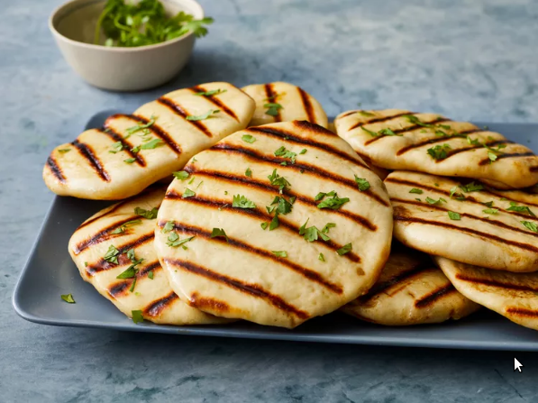

Naan
This butter chicken recipe, or chicken makhani, is one of my favorite Indian dishes. It features a full-flavored sauce that complements the chicken well. It can be made as mild or spicy as you wish by adjusting the cayenne. Serve with basmati rice and naan bread

Follow the steps below to make naan
- Dissolve yeast in warm water in a large bowl. Let stand about 10 minutes, until frothy.
- Meanwhile, generously oil a large bowl.
- Stir sugar, milk, egg, and salt into the yeast mixture. Mix in enough flour to make a soft dough.
- Knead dough on a lightly floured surface until smooth, 6 to 8 minutes.
- Place dough in the prepared oil, cover with a damp cloth, and let rise until doubled in size, about 1 hour.
- Punch down dough on a lightly floured surface, and knead in garlic. Pinch off small handfuls of dough about the size of a golf ball; you should have about 14. Roll each piece into a ball and place on a tray. Cover with a towel, and allow to rise until doubled in size, about 30 minutes.
- Meanwhile, preheat a large grill pan over high heat.
- Brush some melted butter on the preheated grill pan. Place a few pieces of dough in the pan (as many as you can fit) and cook until puffy and lightly browned, 2 to 3 minutes. Brush butter onto the uncooked sides, flip, and cook until browned, 2 to 4 more minutes. Remove from the grill and repeat to cook the remaining naan.
- Enjoy!